Tech Challenge · AI Scientist
Um pipeline de dados que transforma os números públicos do INEP em respostas diretas para o Compromisso Nacional Criança Alfabetizada.
Apresentado por
Tuany Fortunato do Carmo
Por que fizemos esta análise
Esse é o Compromisso Nacional Criança Alfabetizada. Mas assumir a meta é uma coisa — saber onde agir para cumpri-la é outra.
O país mede a alfabetização com uma prova nacional (o SAEB). Uma criança é considerada alfabetizada quando atinge 743 pontos nessa prova. Hoje, cerca de 4 em cada 10 crianças da rede pública não chegam lá.
Os dados existem e são públicos, mas estão espalhados em milhões de linhas, em formatos difíceis de usar. Quem decide onde investir não consegue responder perguntas simples como: "em quais cidades o esforço rende mais?"
Um pipeline que coleta, limpa e organiza esses dados de ponta a ponta — e os transforma em evidências práticas para priorizar investimento. É isso que vamos mostrar nos próximos slides.
Como os dados viram resposta
Pense em uma fábrica com três estações. A matéria-prima entra suja e sai pronta para a decisão — e há controle de qualidade em todas as etapas.
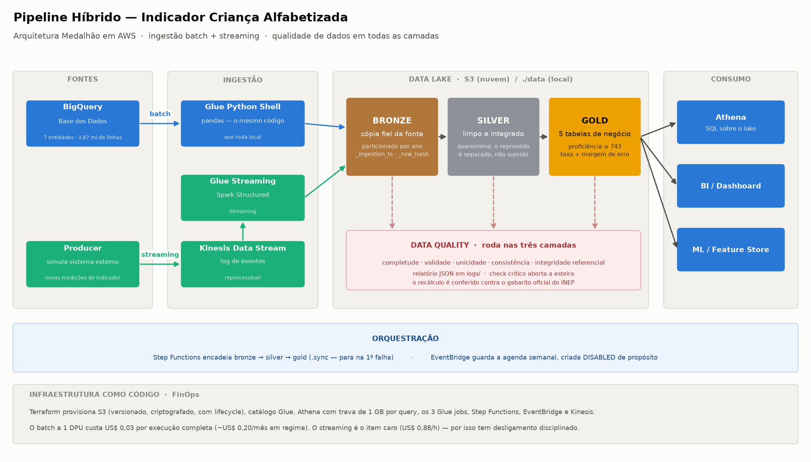
Cópia fiel dos dados originais, do jeito que chegaram. Se algo der errado depois, sempre dá para voltar à fonte.
Dados conferidos e padronizados. O que está inconsistente vai para "quarentena" — é separado, nunca apagado em silêncio.
Tabelas prontas para o negócio: taxa de alfabetização por escola, município e estado, prontas para dashboard e análise.
Antes dos resultados, um minuto sobre a régua
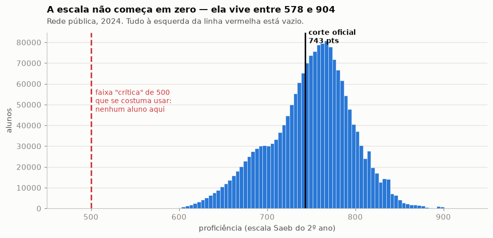
Cada barra conta quantas crianças tiraram cada nota. Na prática, as notas vivem entre 578 e 904 pontos — ninguém tira "zero". A linha preta é o corte oficial: 743 pontos = criança alfabetizada.
Repare como a "montanha" de crianças está colada no corte. Muitas estão logo abaixo da linha — quase lá. Guarde essa imagem: ela é a base da oportunidade que vamos mostrar no final.
Confiança primeiro
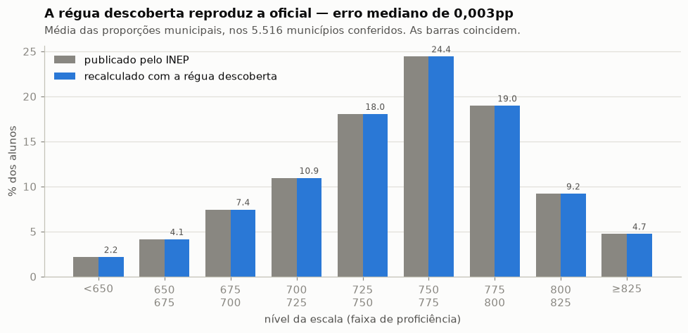
Refizemos o cálculo do INEP do zero, criança por criança, e comparamos com o número publicado. As barras cinzas (oficial) e azuis (nosso recálculo) coincidem em todas as faixas — a diferença típica é de 0,003 ponto percentual, nos 5.516 municípios conferidos.
Significa que tudo o que vem a seguir está ancorado no número oficial. Não é uma estimativa paralela: é o mesmo resultado do INEP, só que agora aberto por escola e por município, pronto para ser explorado.
Um detalhe técnico que muda a resposta
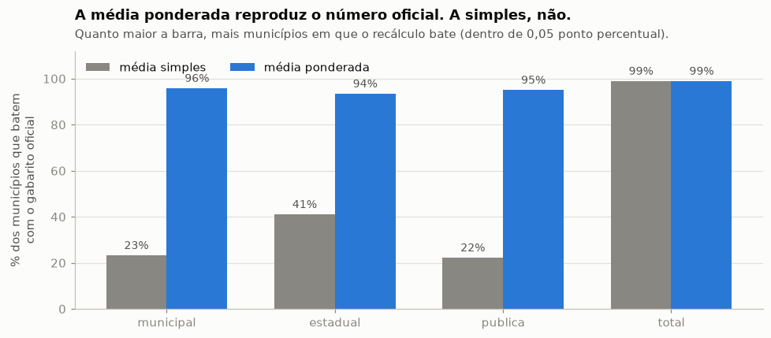
Para calcular a taxa de um município, dá para tirar a média "simples" das escolas (todas pesam igual) ou a média ponderada (escola com mais alunos pesa mais). Só a ponderada bate com o gabarito oficial — em ~95% dos municípios, contra ~22% da simples.
Parece detalhe, mas é o tipo de erro silencioso que gera relatório errado e decisão errada. Uma escola de 30 alunos não pode valer o mesmo que uma de 800. O pipeline já entrega o cálculo certo, sempre — ninguém precisa lembrar disso na mão.
Insight nº 1 — onde está o problema
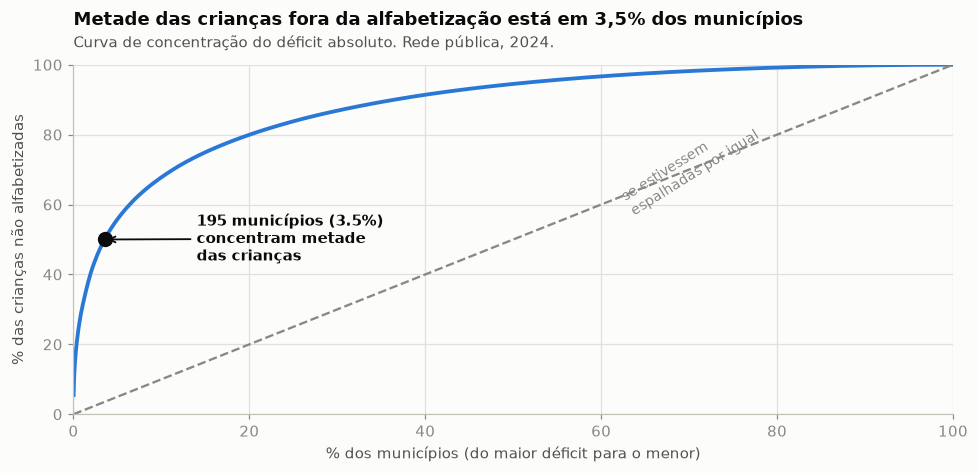
Ordenamos os municípios do maior déficit para o menor e fomos somando. A curva azul sobe muito rápido: 195 municípios (3,5% do total) concentram metade de todas as crianças não alfabetizadas do país. Se o problema fosse espalhado por igual, a curva seguiria a linha pontilhada.
O problema não está em todo lugar ao mesmo tempo. Um programa focado nesses 195 municípios alcança metade das crianças que precisam de ajuda — com uma fração do custo de uma ação nacional uniforme.
Insight nº 2 — o mapa por estado
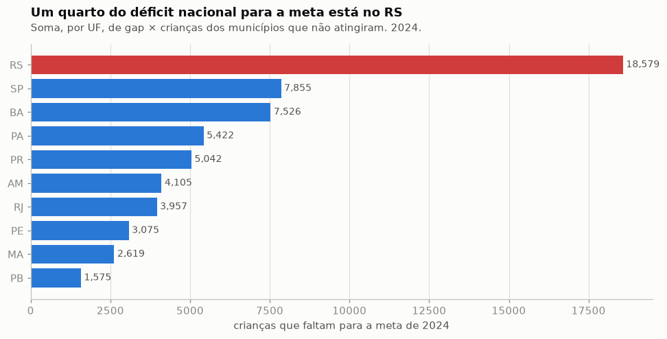
Para cada estado, contamos quantas crianças faltaram para os municípios baterem a meta de 2024. O RS lidera com folga: 18.579 crianças — mais que o dobro do segundo colocado (SP, com 7.855). É provável que as enchentes de 2024 tenham pesado nesse resultado.
O ranking que importa não é o da nota média, e sim o de quantas crianças faltam — ele mistura tamanho da rede e distância da meta. É esse número que dimensiona o esforço de recuperação em cada estado.
Um alerta antes de sair fazendo rankings
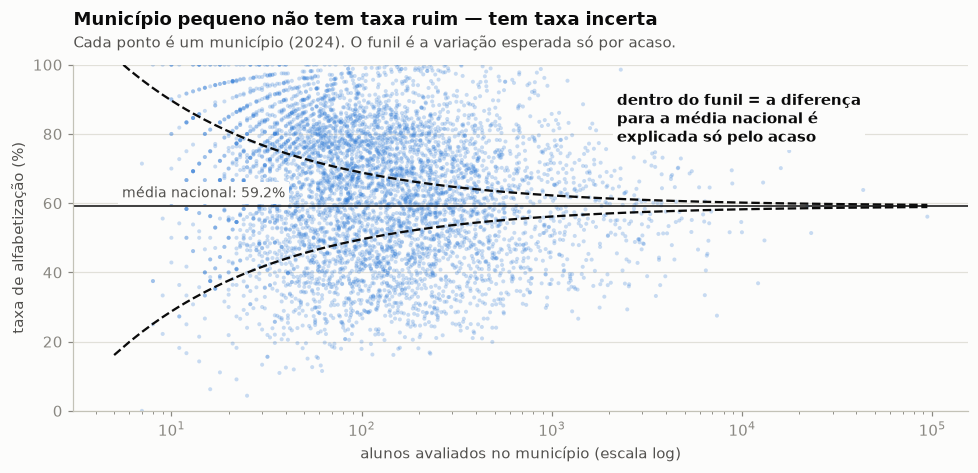
Cada ponto é um município. À esquerda estão os pequenos (poucos alunos avaliados); à direita, os grandes. Repare no formato de funil: com 20 alunos, a taxa balança demais — duas crianças a mais ou a menos mudam 10 pontos percentuais. Dentro do funil, a diferença para a média nacional pode ser só sorte ou azar.
Listas de "melhores e piores municípios" quase sempre têm municípios minúsculos nas pontas — por acaso estatístico, não por mérito ou fracasso. Nosso pipeline entrega a margem de erro junto com a taxa, para ninguém premiar ou punir ruído.
Insight nº 3 — onde mora a desigualdade
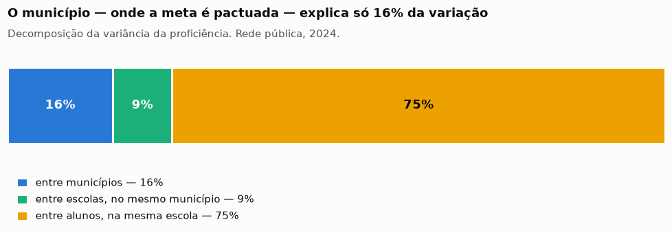
Pegamos toda a variação de notas entre as crianças do Brasil e perguntamos: quanto vem da cidade onde ela mora? Da escola? Resposta: 16% entre municípios, 9% entre escolas da mesma cidade — e 75% entre alunos da mesma sala.
A meta é pactuada com o município, mas o município explica só 16% da história. Política pública que para no nível da cidade não alcança onde a diferença realmente acontece: dentro da escola, criança a criança.
Insight nº 4 — o zoom nas escolas
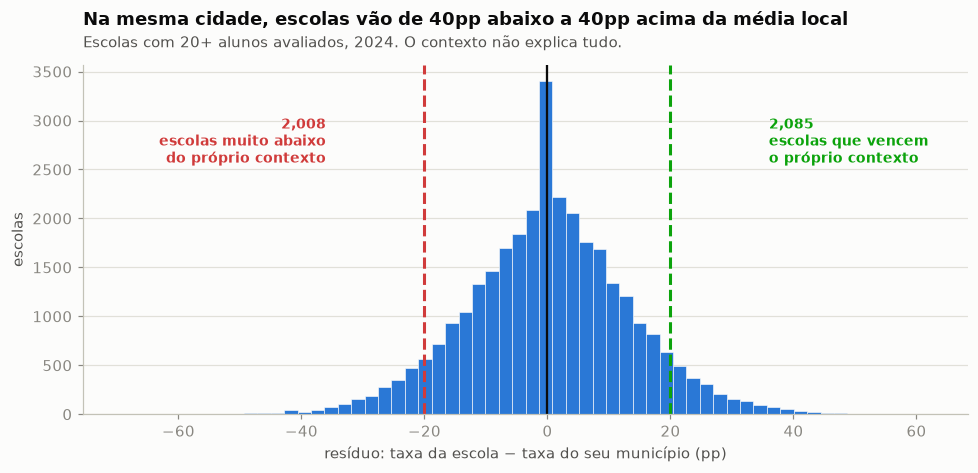
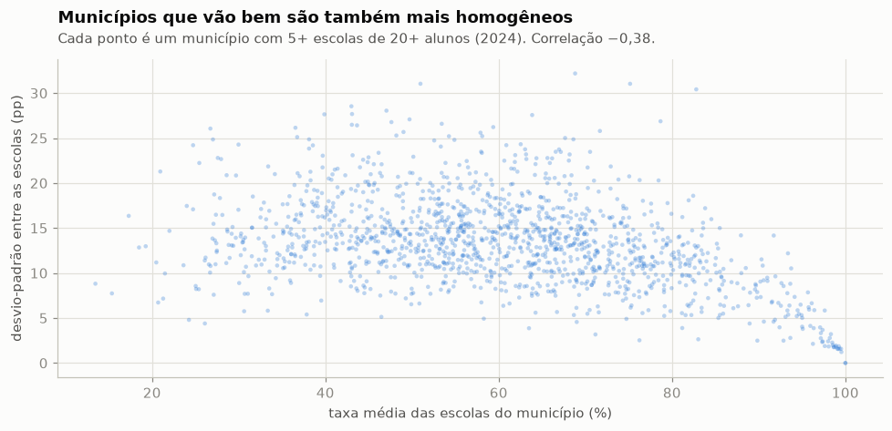
À esquerda: comparamos cada escola com a média da sua própria cidade. Cerca de 2.000 escolas ficam muito abaixo do próprio contexto — e outras 2.000 o vencem, mesmo dividindo o mesmo bairro e a mesma renda. À direita: municípios que vão bem também são os mais homogêneos — as escolas deles andam juntas.
Se o contexto fosse destino, escolas vizinhas teriam o mesmo resultado — e não têm. As escolas que vencem o próprio contexto mostram que gestão e prática pedagógica fazem diferença: são o lugar óbvio para ir aprender o que funciona e replicar na escola do lado.
Insight nº 5 — onde o esforço rende mais
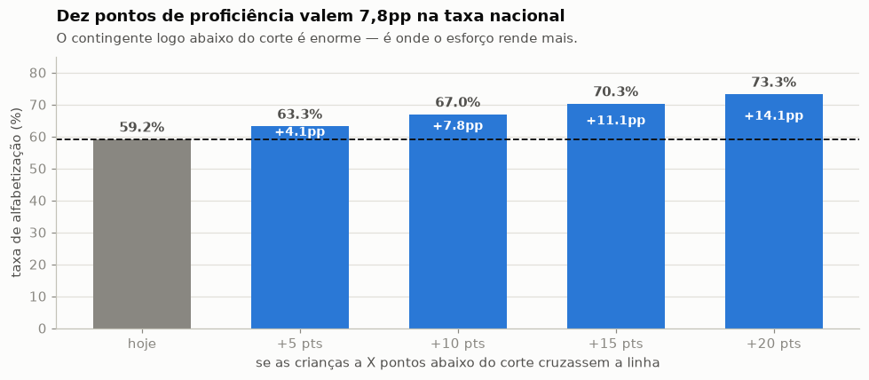
Lembra da "montanha" colada no corte? Aqui simulamos: se as crianças que estão até 10 pontos abaixo da linha cruzassem o corte, a taxa nacional saltaria de 59,2% para 67%. São ganhos enormes com avanços pequenos, porque muita criança está quase lá.
Com o dado aberto por aluno, dá para ir além: modelos de IA podem apontar quais crianças estão no grupo "quase lá" e direcionar reforço cirúrgico para elas — o investimento com o maior retorno por real gasto de toda a análise.
Conclusão da apresentação
Focar — um programa nos 3,5% de municípios certos alcança metade das crianças que precisam de ajuda.
Aprender — identificar o que essas escolas fazem de diferente e replicar nas 2.008 que ficam abaixo do mesmo contexto.
Antecipar — usar IA para encontrar as crianças "quase lá" e concentrar o reforço onde o retorno é maior.
Para se aprofundar na parte técnica
Infraestrutura 100% em código (Terraform) na AWS: ingestão do BigQuery, três camadas no S3, orquestração com Step Functions e consulta em SQL via Athena.
Custo total da operação em regime, com carga semanal. Menos que um cafezinho por mês.
Bronze + Silver + Gold em ~4 minutos.
As três camadas inteiras no S3.
O único item caro: liga para a demo (~US$ 0,45) e é desligado via script.
Fim da apresentação
Todo o código, a documentação e as análises desta apresentação estão abertos no GitHub.
github.com/tuanyfortunato/pipeline-dados-alfabetiza-brasilTech Challenge · AI Scientist
Tuany Fortunato do Carmo